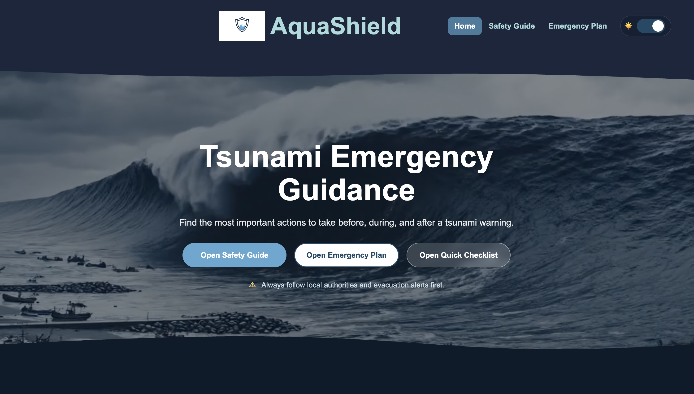
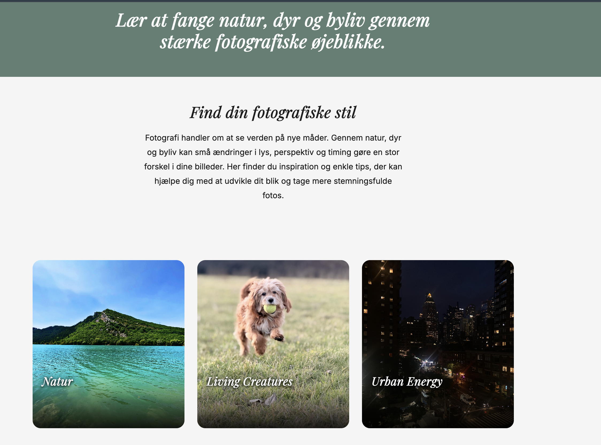
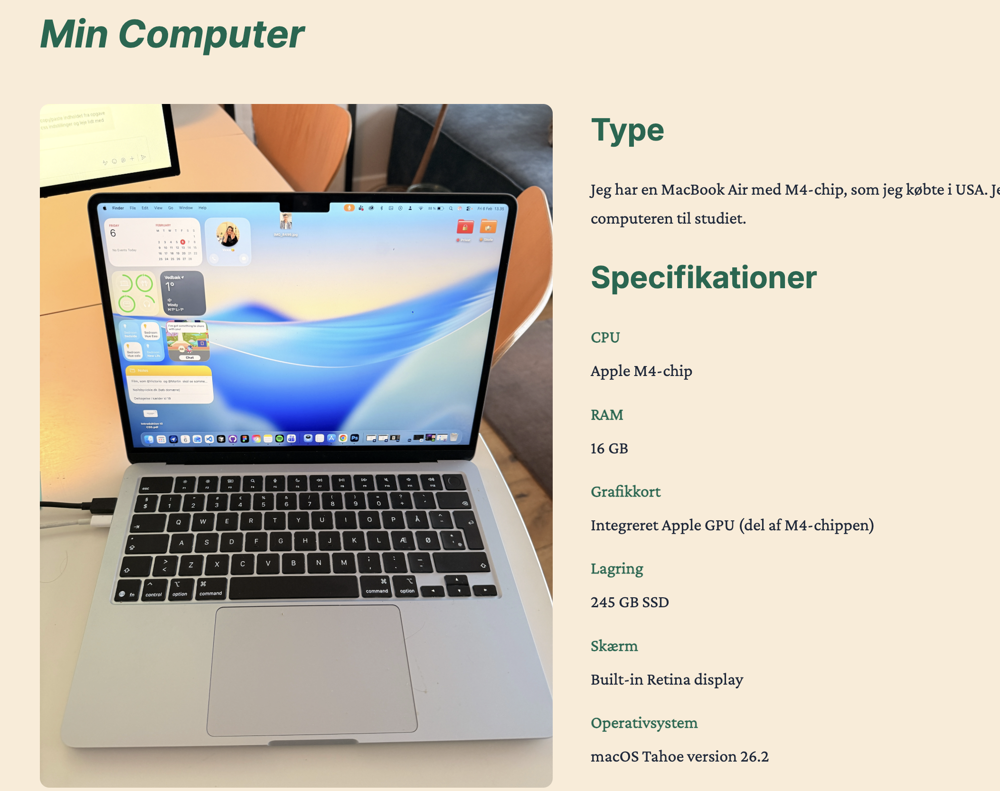

01 / Completed
AquaShield
A tsunami emergency guide with safety actions, an interactive house diagram, a quick checklist, and a personal emergency plan.
GitHubLayout preview
These are quick design directions using the real project content. Pick the one that feels closest, and I will turn it into the actual Work page.
Option A
Best if you want the work to feel serious and exam-ready, with each project getting room for context.

A tsunami emergency guide with safety actions, an interactive house diagram, a quick checklist, and a personal emergency plan.
GitHub
A photography inspiration site exploring calm nature, living creatures, and urban energy through image-led category pages.
GitHub
A computer-information website covering my own MacBook, operating systems, components, statistics, and a small gallery.
GitHubOption B
Best if you want it to feel minimal, fast to scan, and closer to the quiet portfolio reference.
Option C
Best if you want the screenshots to be the main experience, while still keeping short readable text.
The finished case, screenshots, and repository link will be added when the project is ready.
Option D
Best if you want the projects to feel like polished web products, with each screenshot presented inside a laptop-style frame.
A photography inspiration site exploring calm nature, living creatures, and urban energy through image-led category pages.
GitHub